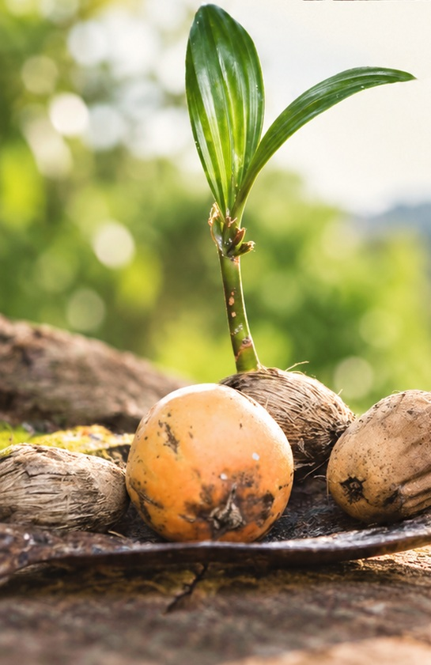

扎根文化
在部落的歷史、語言與生活脈絡中，理解文化、實踐文化。

ʼonanip ／ 檳榔幼苗01 關於協會
ʼonanip，是檳榔幼苗，
也是我們對文化延續的期許。
希望文化的種子，
在我們心中發芽，在部落綻放。
花蓮縣ʼonanip文教協會於 2023 年 9 月 2 日成立，由關心原住民族文化發展的族人與社會人士共同發起，集結眾人的力量，投入教育與文化事務。
從語言學習到傳統技藝，從世代交流到文化實踐，我們期許如同扎根土地的檳榔新芽，守護部落的歷史、語言與智慧，讓文化在生活中繼續生長。
02 宗旨與理念
以傳承原住民族歷史、語言及文化為精神，
協會章程第二條宗旨節錄
辦理原住民族教育及文化事務。
在部落的歷史、語言與生活脈絡中，理解文化、實踐文化。
讓族語與傳統技藝走進學習和日常，陪伴下一個世代成長。
連結世代與夥伴，促進原住民族教育、文化與藝術的交流。
依協會章程第五條。
03 核心業務
從語言到技藝，讓文化被理解、被實踐。
LANGUAGE
讓族語回到生活裡。
營造友善的族語學習環境，透過認證課程、生活會話與親子共學，鼓勵族人開口說母語。
CULTURE
在文化的脈絡中學習。
連結傳統技藝與部落祭儀，透過服飾製作、祭器編織與樂舞學習，理解並實踐文化精神。
04 組織與團隊
9 位理事，負責會務決策與執行。
理事長綜理會務
總幹事、會計與出納執行行政事務
3 位監事，監察會務與審核決算。
常務監事監察日常會務
理事長
常務監事
認同協會宗旨，歡迎申請入會，與我們一起讓文化的新芽茁壯。
會員系統／入會申請 ↗（另開視窗）入會費 NT$1,000（入會時繳納）
常年會費 NT$1,200
填具申請書，經理事會通過並繳納會費後，成為個人會員。申請資格與費用以協會章程及相關決議為準。